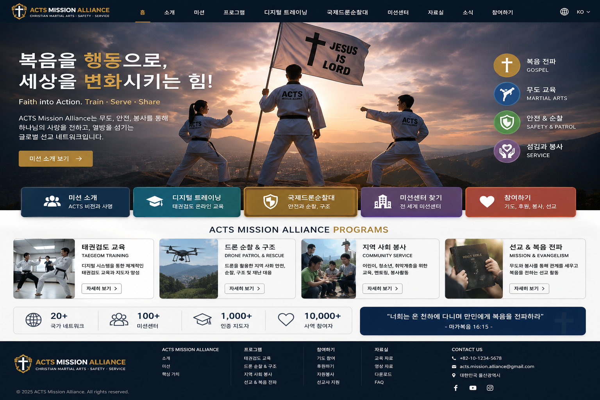

🥋
Martial Arts
태권검도·경찰무도·호신술을 통해 어린이와 청소년, 지역사회와 자연스럽게 만나는 교육 사역을 지원합니다.
자세히 보기 →하나님을 믿고 예수 그리스도의 십자가 복음을 전하는 사역을 가장 우선합니다. 태권검도·경찰무도·안전·드론·봉사 프로그램을 디지털 교육으로 연결하여 해외 선교사가 현지에서 더 힘 있게 사역하도록 돕습니다.

대한예수교장로회와 고신을 비롯한 정통 교단의 신앙 전통을 존중하면서, 무엇보다 하나님을 믿고 예수 그리스도의 십자가와 부활의 복음을 전하는 사역에 함께하는 것을 가장 중요한 기준으로 삼습니다.
신앙원칙 자세히 보기배우고, 섬기고, 전합니다. 무도와 안전 기술은 목적이 아니라 선교 현장에서 사람을 만나고 섬기며 복음을 전하기 위한 실제적인 도구입니다.
해외에서 복음을 전하고 있는 선교사가 장소와 비용의 제약 없이 태권검도 기술과 지도법을 배우고, 평가를 거쳐 선교 목적의 지도자 라이선스를 받을 수 있도록 지원합니다.
TAEGEOM
태권검도 디지털 교육·선교사 지도자 양성
POLICE MARTIAL ARTS
경찰무도·호신·안전·생활방어 교육
IDP
드론 순찰·안전·재난예방·지역봉사
MISSION SERVICE
어린이·청소년 교육과 복음 선교
ACTS는 현지 선교사가 국제 네트워크 안에서 공식적인 역할과 활동기록을 갖고 사역하도록 Mission Center 체계를 구축합니다.
기도·후원·봉사·교육 참여로 선교 사역과 연결됩니다.
디지털 교육과 평가를 거쳐 현지에서 태권검도 등 ACTS 프로그램을 지도합니다.
지역 Mission Center를 운영하며 현지 지도자를 양성하고 활동을 본부와 공유합니다.
해외 선교사와 지도자에게 이름뿐인 신분이 아니라 교육이력, 지도자 라이선스, 공식 임명과 ACTS ID 조회체계를 제공합니다.
기도, 무도교육, 안전봉사, 현장선교 등 각자의 은사로 참여할 수 있습니다.